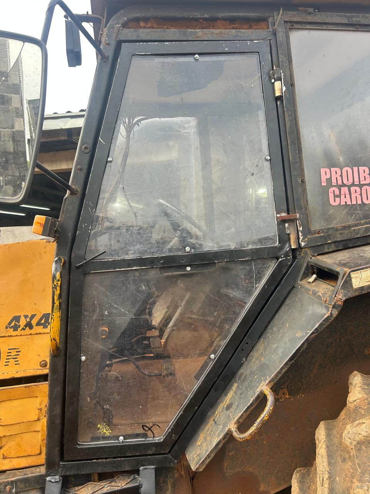
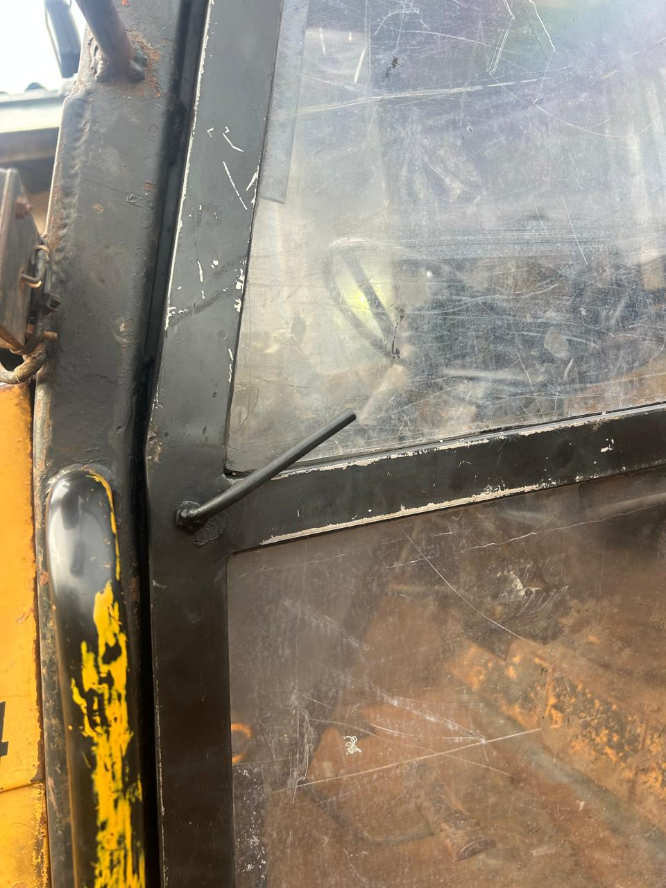
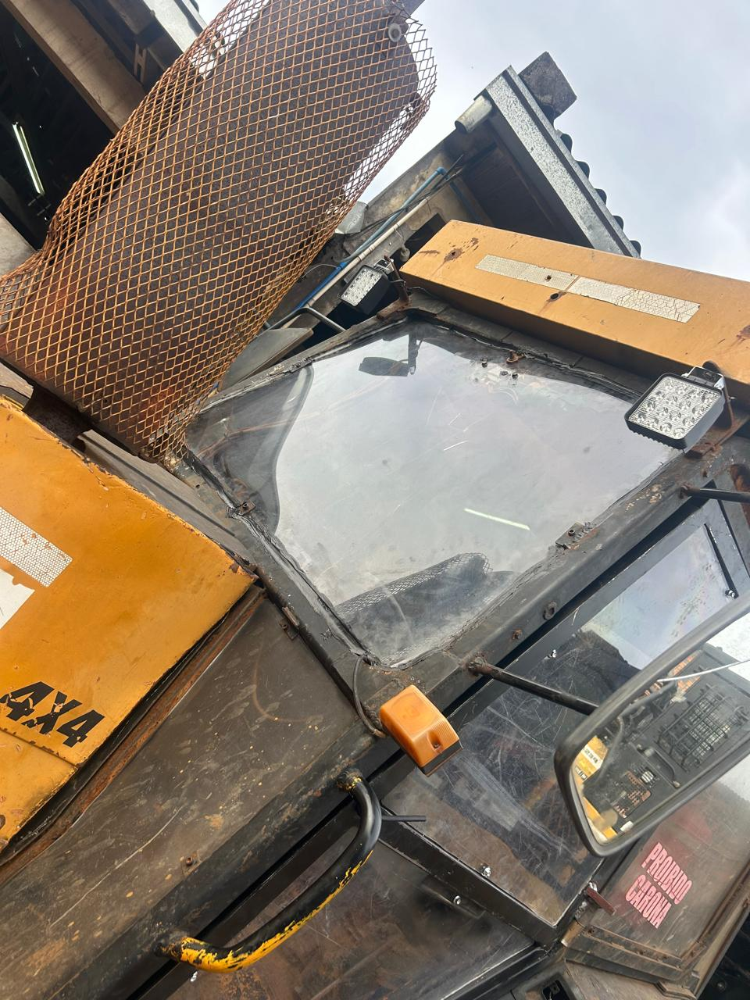
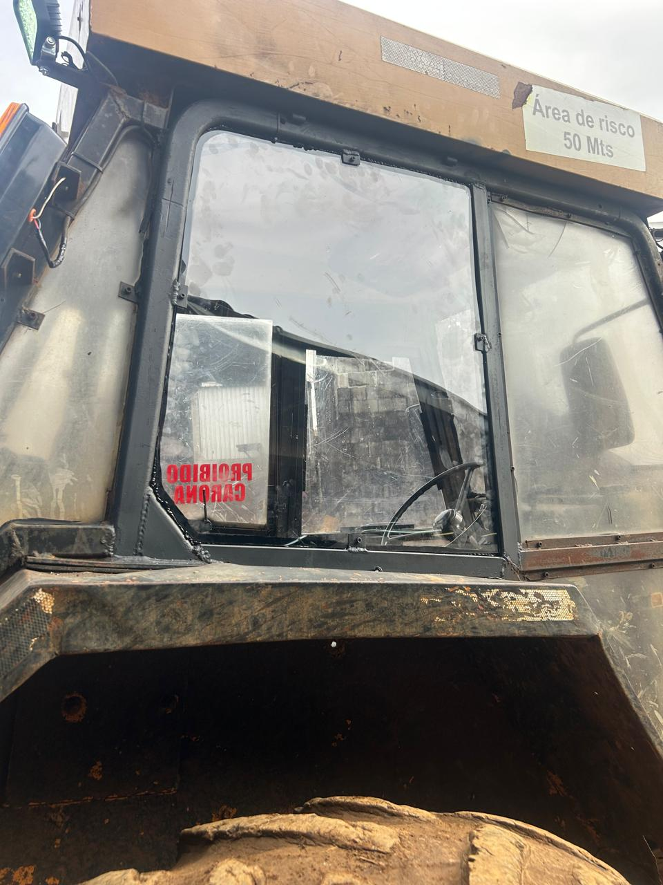
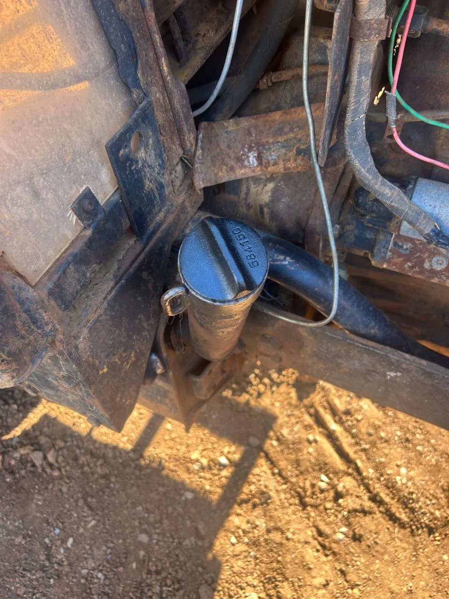
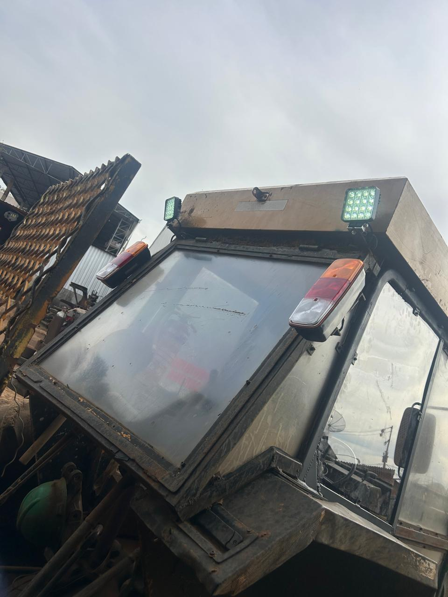

Revisão geral do trator Valmet 1280 com guincho — cabine, guincho, transmissão, freio e vedações
🚜 Máquina ISB 09📅 07/08 – 19/08/2026🔧 FM Manutenções🕐 Horímetro 1156🟢✔️ 13 serviços concluídos⏱ 29h40 de serviço🟠⏳ 3 pendências🧾 R$ 158,40 em peças🧾 Ferros e Lexans a lançar
1Serviços Executados
🟢✔️
1. Corrigido o vazamento do cubo direito, com troca do retentor. Relato da inspeção: “Vazamento cubo direito”.
🟢✔️
2. Fabricada e instalada a porta da cabine, com Lexan. (foto 1)Relato da inspeção: “Sem porta”.
🟢✔️
3. Instalada a maçaneta e o travamento da porta. (foto 2)Serviço adicional — porta entregue completa e operante.
🟢✔️
4. Trocado o Lexan dianteiro, lateral e traseiro. (fotos 3 e 4)Serviço adicional de vidraçaria da cabine.
🟢✔️
5. Arrumado o freio de mão. Relato da inspeção: “Sem freio de mão”.
🟢✔️
6. Recolocados os parafusos da tampa do guincho. Relato da inspeção: “Parafusos da tampa do guincho”.
🟢✔️
7. Corrigida a força do guincho. Relato da inspeção: “Guincho sem força”.
🟢✔️
8. Banco recuperado. Relato da inspeção: “Banco quebrado”.
🟢✔️
9. Cabine recuperada. Relato da inspeção: “Cabine quebrada”.
🟢✔️
10. Iluminação corrigida, com os faróis de trabalho em operação. (fotos 3 e 6)Relato da inspeção: “Sem iluminação”.
🟢✔️
11. Instalada a proteção do guincho. Relato da inspeção: “Sem proteção no guincho”.
🟢✔️
12. Colocada a tampa do tanque de abastecimento. (foto 5)Serviço adicional — a máquina estava sem tampa.
🟢✔️
13. Arrumada a alavanca de marcha. Relato da inspeção: “Alavanca de marcha”.
2Pendências — Gerência Resolve
🟠⏳
1. Extintor sem carga — recarga ou substituição. Item de segurança: enquanto não for resolvido, a máquina não fica plenamente liberada.
🟠⏳
2. Recapagem dos pneus. Depende de contratação de serviço externo.
🟠⏳
3. Cabo do guincho continua no mesmo comprimento. Substituição por cabo maior depende de aquisição.
🟠
Decisão da gerência: os três itens dependem de compra ou contratação e não puderam ser resolvidos na oficina. Aprovados, entram na próxima intervenção do ISB 09.
Condicional 87.51624/08/2026 · Valforte Peças · Ordem de compra 004364
Item
Aplicação
Qtd.
Unit. R$
Total R$
KH4933 — Anel retentor do tanque
Vedação Tanque de abastecimento
1
1,00
1,00
584150 — Tampa do tanque
Peça Tanque de abastecimento
1
37,00
37,00
Subtotal da nota
2
38,00
Total geral de peças
3 notas · 4 peças aplicadas
R$ 158,40
Materiais com custo a lançar
Material
Aplicação
Qtd.
Valor R$
Ferros / perfis metálicos
Confecção da porta da cabine
—
A lançar
Lexan
Porta, dianteiro, lateral e traseiro
—
A lançar
🧾
Pendência de lançamento: o custo dos ferros usados na confecção da porta e o dos Lexans ainda não foi lançado na OS 0000003848. Com as notas já lançadas, as peças somam R$ 158,40 — o custo total da revisão só fecha depois desses dois lançamentos.
📌
Cliente das notas: Isbra Florestal. As duas condicionais da Valforte trazem a identificação ISB 09; a venda 881324 (anel elástico I-38) veio sem a identificação da máquina na nota — conferir no lançamento.
4Horas Trabalhadas — Mão de Obra
Ordem de serviço0000003848
ID do objetoISB09
EquipamentoTrator Valmet 1280 com guincho
ClienteIsbra Florestal · Guarapuava
Problema relatadoRevisão geral (Kauan)
CompetênciaAgosto/2026
Apontamento
Hora início
Hora final
Duração
Hrs de serviço
1º apontamento
07:30
17:30
08:30
08:30
2º apontamento
—
10:00
02:30
02:30
3º apontamento
08:00
19:00
09:30
09:30
4º apontamento
11:30
17:30
06:00
06:00
5º apontamento
14:20
17:30
03:10
03:10
Total alocado
29:40
29:40
1º · 07:30–17:30
08:30
2º · até 10:00
02:30
3º · 08:00–19:00
09:30
4º · 11:30–17:30
06:00
5º · 14:20–17:30
03:10
⏱
29h40min de horas alocadas, integralmente como horas de serviço — sem horas de deslocamento e 0 km rodado no período. A máquina entrou em 07/08 e foi entregue em 19/08/2026. O 2º apontamento aparece no sistema sem hora de início registrada.
5Registro Fotográfico

📷Foto a anexarfotos/isb09/01-porta-lexan.jpg
Foto 1Porta fabricada em oficina, com Lexan, montada no lado esquerdo da cabine.

📷Foto a anexarfotos/isb09/02-macaneta.jpg
Foto 2Maçaneta e haste de travamento da porta instaladas e funcionando.

📷Foto a anexarfotos/isb09/03-lexan-dianteiro-iluminacao.jpg
Foto 3Lexan dianteiro trocado e farol de trabalho da frente — iluminação corrigida.

📷Foto a anexarfotos/isb09/04-lexan-traseiro.jpg
Foto 4Lexan traseiro e lateral trocados, com a cabine fechada e a sinalização no lugar.

📷Foto a anexarfotos/isb09/05-tampa-tanque.webp
Foto 5Tampa do tanque de abastecimento colocada — a máquina estava sem.

📷Foto a anexarfotos/isb09/06-farois-teto.jpg
Foto 6Faróis de trabalho e lanternas no teto da cabine, ligados — iluminação corrigida.
6Resumo da Manutenção
13
🟢✔️ Serviços executados
3
🟠⏳ Pendências da gerência
R$ 158,40
🧾 Peças aplicadas (3 notas)
2
🧾 Materiais a lançar
29:40
⏱ Horas de serviço (OS 3848)
6
📷 Registros fotográficos
7Conclusão
🟢✔️
O ISB 09 entrou na oficina em 07/08 e foi entregue em 19/08/2026, com 13 serviços concluídos em 29h40 de mão de obra: cabine fechada e envidraçada, porta nova com maçaneta, iluminação, freio de mão, alavanca de marcha, guincho e vazamento do cubo resolvidos, além da tampa do tanque que a máquina não tinha. Restam apenas 3 itens para a gerência — extintor, recapagem dos pneus e cabo do guincho — todos dependentes de compra ou contratação. Em peças, as notas lançadas somam R$ 158,40; falta ainda lançar o custo dos ferros da porta e dos Lexans para fechar o custo total da revisão.
FM Manutenções — Relatório do ISB 09 gerado em 29/08/2026.